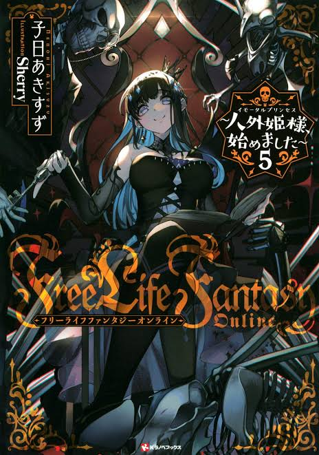

Free Life Fantasy Online
Novel Info's
Status: Ongoing
Genre: Action, Adventure, Comedy, Fantasy, Sci-fi, Shounen, Slice of Life
Author: Nenohi Akisuzu
Illustrator: Sherry
Volumes/Chapters: 7, 116
Original Publisher: Kodansha, Syosetu
English Publisher: Seven Seas
Fan Translation: Krytyk’s, Karu Translations
Description/Sypnosis
Free Life Fantasy Online… a.k.a. FLFO.
Tsukishiro Kotone receives this game as gift from her little sister and starts playing.
The character’s race she has selected was… one of “Inhuman” races for enthusiasts.
A race said to be bad even among Inhuman races that are known to be difficult – a Zombie.
Download Links
Epub & Pdf